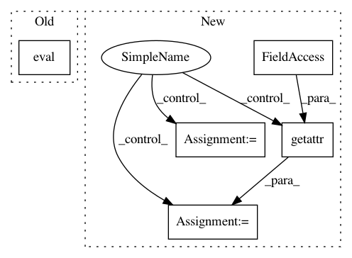

3033c545288896720b201183ed0d67d910710e47,examples/mnist_lrp.py,,create_model,#Any#Any#,70
Before Change
raise ValueError("Unknown model name {}".format(modelname))
if modelname.startswith("pt_"): // load PreTrained models
model_init_fxn = eval("innvestigate.utils.tests.networks.base.{}".format(modelname))
model_wo_sm, model_w_sm = model_init_fxn(input_shape[1:])
else:
network_init_fxn = eval("innvestigate.utils.tests.networks.base.{}".format(modelname))
After Change
if modelname in innvestigate.applications.mnist.__all__: // load PreTrained models
model_init_fxn = getattr(innvestigate.applications.mnist, modelname)
model_wo_sm, model_w_sm = model_init_fxn(input_shape[1:])
elif modelname in innvestigate.utils.tests.networks.base.__all__:
network_init_fxn = getattr(innvestigate.utils.tests.networks.base, modelname)
network = network_init_fxn(input_shape,
num_classes,
**kwargs)
model_wo_sm = Model(inputs=network["in"], outputs=network["out"])
In pattern: SUPERPATTERN
Frequency: 3
Non-data size: 5
Instances
Project Name: albermax/innvestigate
Commit Name: 3033c545288896720b201183ed0d67d910710e47
Time: 2018-04-10
Author: sebastian.lapuschkin@hhi.fraunhofer.de
File Name: examples/mnist_lrp.py
Class Name:
Method Name: create_model
Project Name: keras-team/keras
Commit Name: 94dbc3042f5a85b399f5ce2859d4e8fbafd235b9
Time: 2017-07-06
Author: me@taehoonlee.com
File Name: tests/keras/backend/backend_test.py
Class Name:
Method Name: check_two_tensor_operation
Project Name: keras-team/keras
Commit Name: 94dbc3042f5a85b399f5ce2859d4e8fbafd235b9
Time: 2017-07-06
Author: me@taehoonlee.com
File Name: tests/keras/backend/backend_test.py
Class Name:
Method Name: check_single_tensor_operation